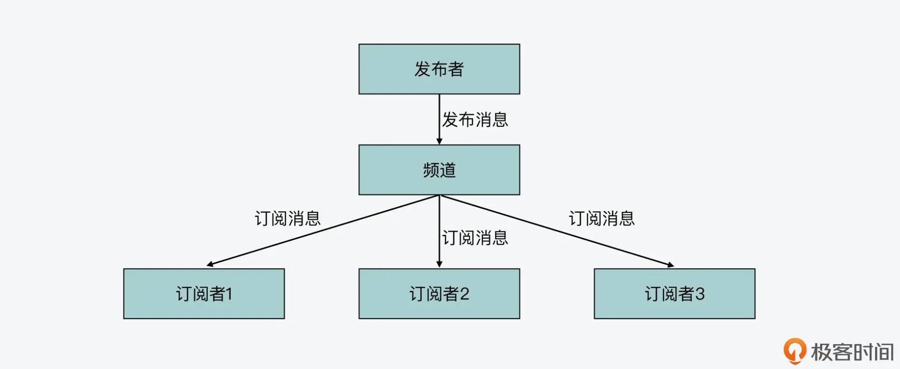
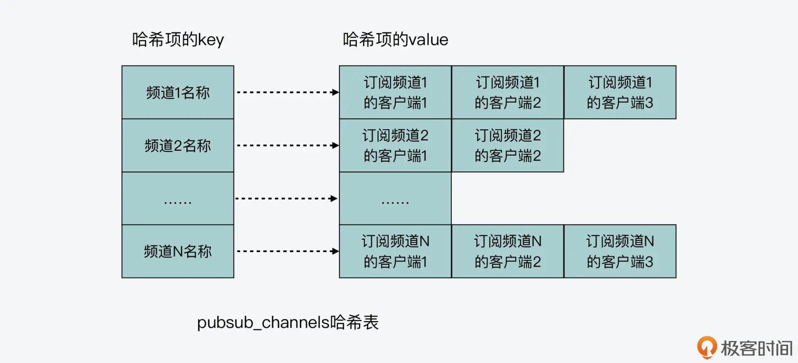
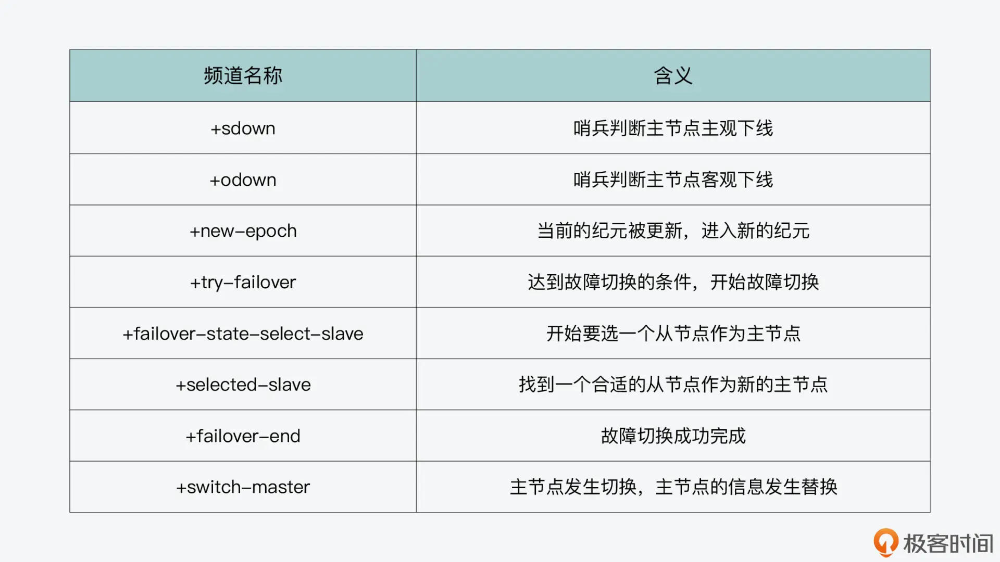

- 00 开篇词 阅读Redis源码能给你带来什么？.md.html
- 01 带你快速攻略Redis源码的整体架构.md.html
- 02 键值对中字符串的实现，用char还是结构体？.md.html
- 03 如何实现一个性能优异的Hash表？.md.html
- 04 内存友好的数据结构该如何细化设计？.md.html
- 05 有序集合为何能同时支持点查询和范围查询？.md.html
- 06 从ziplist到quicklist，再到listpack的启发.md.html
- 07 为什么Stream使用了Radix Tree？.md.html
- 08 Redis server启动后会做哪些操作？.md.html
- 09 Redis事件驱动框架（上）：何时使用select、poll、epoll？.md.html
- 10 Redis事件驱动框架（中）：Redis实现了Reactor模型吗？.md.html
- 11 Redis事件驱动框架（下）：Redis有哪些事件？.md.html
- 12 Redis真的是单线程吗？.md.html
- 13 Redis 6.0多IO线程的效率提高了吗？.md.html
- 14 从代码实现看分布式锁的原子性保证.md.html
- 15 为什么LRU算法原理和代码实现不一样？.md.html
- 16 LFU算法和其他算法相比有优势吗？.md.html
- 17 Lazy Free会影响缓存替换吗？.md.html
- 18 如何生成和解读RDB文件？.md.html
- 19 AOF重写（上）：触发时机与重写的影响.md.html
- 20 AOF重写（下）：重写时的新写操作记录在哪里？.md.html
- 21 主从复制：基于状态机的设计与实现.md.html
- 22 哨兵也和Redis实例一样初始化吗？.md.html
- 23 从哨兵Leader选举学习Raft协议实现（上）.md.html
- 24 从哨兵Leader选举学习Raft协议实现（下）.md.html
- 25 PubSub在主从故障切换时是如何发挥作用的？.md.html
- 26 从Ping-Pong消息学习Gossip协议的实现.md.html
- 27 从MOVED、ASK看集群节点如何处理命令？.md.html
- 28 Redis Cluster数据迁移会阻塞吗？.md.html
- 29 如何正确实现循环缓冲区？.md.html
- 30 如何在系统中实现延迟监控？.md.html
- 31 从Module的实现学习动态扩展功能.md.html
- 32 如何在一个系统中实现单元测试？.md.html
- 结束语 Redis源码阅读，让我们从新开始.md.html
- 捐赠
25 PubSub在主从故障切换时是如何发挥作用的？
在前面两节课，我们学习了哨兵工作的基本过程：哨兵会使用 sentinelRedisInstance 结构体来记录主节点的信息，在这个结构体中又记录了监听同一主节点的其他哨兵的信息。那么，一个哨兵是如何获得其他哨兵的信息的呢？
这其实就和哨兵在运行过程中，使用的发布订阅（Pub/Sub）通信方法有关了。Pub/Sub 通信方法可以让哨兵订阅一个或多个频道，当频道中有消息时，哨兵可以收到相应消息；同时，哨兵也可以向频道中发布自己生成的消息，以便订阅该频道的其他客户端能收到消息。
今天这节课，我就带你来了解发布订阅通信方法的实现，以及它在哨兵工作过程中的应用。同时，你还可以了解哨兵之间是如何发现彼此的，以及客户端是如何知道故障切换完成的。Pub/Sub 通信方法在分布式系统中可以用作多对多的信息交互，在学完这节课之后，当你要实现分布式节点间通信时，就可以把它应用起来。
好了，接下来，我们先来看下发布订阅通信方法的实现。
发布订阅通信方法的实现
发布订阅通信方法的基本模型是包含发布者、频道和订阅者，发布者把消息发布到频道上，而订阅者会订阅频道，一旦频道上有消息，频道就会把消息发送给订阅者。一个频道可以有多个订阅者，而对于一个订阅者来说，它也可以订阅多个频道，从而获得多个发布者发布的消息。
下图展示的就是发布者 - 频道 - 订阅者的基本模型，你可以看下。

频道的实现
了解了发布订阅方法的基本模型后，我们就来看下频道是如何实现的，因为在发布订阅通信方法中，频道很重要，它是发布者和订阅者之间通信的基础。
其实，Redis 的全局变量 server 使用了一个成员变量 pubsub_channels 来保存频道，pubsub_channels 的初始化是在 initServer 函数（在server.c文件中）中完成的。initServer 函数会调用 dictCreate 创建一个 keylistDictType 类型的哈希表，然后用这个哈希表来保存频道的信息，如下所示：
void initServer(void) {
…
server.pubsub_channels = dictCreate(&keylistDictType,NULL);
…
}
注意，当哈希表是 keylistDictType 类型时，它保存的哈希项的 value 就是一个列表。而之所以采用这种类型来保存频道信息，是因为 Redis 把频道的名称作为哈希项的 key，而把订阅频道的订阅者作为哈希项的 value。就像刚才我们介绍的，一个频道可以有多个订阅者，所以 Redis 在实现时，就会用列表把订阅同一个频道的订阅者保存起来。
pubsub_channels 哈希表保存频道和订阅者的示意图如下所示：

了解了频道是如何实现的之后，下面我们再分别看下发布命令和订阅命令的实现。
发布命令的实现
发布命令在 Redis 的实现中对应的是 publish。我在【第 14 讲】中给你介绍过，Redis server 在初始化时，会初始化一个命令表 redisCommandTable，表中就记录了 Redis 支持的各种命令，以及对应的实现函数。
这张命令表是在 server.c 文件中定义的，当你需要了解 Redis 某个命令的具体实现函数时，一个快捷的方式就是在这张表中查找对应命令，然后就能定位到该命令的实现函数了。我们同样可以用这个方法来定位 publish 命令，这样就可以看到它对应的实现函数是 publishCommand（在pubsub.c文件中），如下所示：
struct redisCommand redisCommandTable[] = {
…
{"publish",publishCommand,3,"pltF",0,NULL,0,0,0,0,0},
…
}
我们来看下 publishCommand 函数，它是调用 pubsubPublishMessage 函数（在 pubsub.c 文件中）来完成消息的实际发送，然后，再返回接收消息的订阅者数量的，如下所示：
void publishCommand(client *c) {
//调用pubsubPublishMessage发布消息
int receivers = pubsubPublishMessage(c->argv[1],c->argv[2]);
… //如果Redis启用了cluster，那么在集群中发送publish命令
addReplyLongLong(c,receivers); //返回接收消息的订阅者数量
}
而对于 pubsubPublishMessage 函数来说，它的原型如下。你可以看到，它的两个参数分别是要发布消息的频道，以及要发布的具体消息。
int pubsubPublishMessage(robj *channel, robj *message)
pubsubPublishMessage 函数会在 server.pubsub_channels 哈希表中，查找要发布的频道。如果找见了，它就会遍历这个 channel 对应的订阅者列表，然后依次向每个订阅者发送要发布的消息。这样一来，只要订阅者订阅了这个频道，那么发布者发布消息时，它就能收到了。
//查找频道是否存在
de = dictFind(server.pubsub_channels,channel);
if (de) { //频道存在
…
//遍历频道对应的订阅者，向订阅者发送要发布的消息
while ((ln = listNext(&li)) != NULL) {
client *c = ln->value;
…
addReplyBulk(c,channel);
addReplyBulk(c,message);
receivers++;
}
}
好了，了解了发布命令后，我们再来看下订阅命令的实现。
订阅命令的实现
和查找发布命令的方法一样，我们可以在 redisCommandTable 表中，找到订阅命令 subscribe 对应的实现函数是 subscribeCommand（在 pubsub.c 文件中）。
subscribeCommand 函数的逻辑比较简单，它会直接调用 pubsubSubscribeChannel 函数（在 pubsub.c 文件中）来完成订阅操作，如下所示：
void subscribeCommand(client *c) {
int j;
for (j = 1; j < c->argc; j++)
pubsubSubscribeChannel(c,c->argv[j]);
c->flags |= CLIENT_PUBSUB;
}
从代码中，你可以看到，subscribeCommand 函数的参数是 client 类型的变量，而它会根据 client 的 argc 成员变量执行一个循环，并把 client 的每个 argv 成员变量传给 pubsubSubscribeChannel 函数执行。
对于 client 的 argc 和 argv 来说，它们分别代表了要执行命令的参数个数和具体参数值，那么，这里的参数值是指什么呢?
其实，我们来看下 pubsubSubscribeChannel 函数的原型就能知道了，如下所示：
int pubsubSubscribeChannel(client *c, robj *channel)
pubsubSubscribeChannel 函数的参数除了 client 变量外，还会接收频道的信息，这也就是说，subscribeCommand 会按照 subscribe 执行时附带的频道名称，来逐个订阅频道。我也在下面展示了 subscribe 命令执行的一个示例，你可以看下。当这个 subscribe 命令执行时，它会订阅三个频道，分别是 channel1、channel2 和 channel3：
subscribe channel1 channel2 channel3
下面我们来具体看下 pubsubSubscribeChannel 函数的实现。这个函数的逻辑也比较清晰，主要可以分成三步。
首先，它把要订阅的频道加入到 server 记录的 pubsub_channels 中。如果这个频道是新创建的，那么它会在 pubsub_channels 哈希表中新建一个哈希项，代表新创建的这个频道，并且会创建一个列表，用来保存这个频道对应的订阅者。
如果频道已经在 pubsub_channels 哈希表中存在了，那么 pubsubSubscribeChannel 函数就直接获取该频道对应的订阅者列表。
然后，pubsubSubscribeChannel 函数把执行 subscribe 命令的订阅者，加入到订阅者列表中。
最后，pubsubSubscribeChannel 函数会把成功订阅的频道个数返回给订阅者。
下面的代码展示了这部分的逻辑，你可以看下。
if (dictAdd(c->pubsub_channels,channel,NULL) == DICT_OK) {
…
de = dictFind(server.pubsub_channels,channel); //在pubsub_channels哈希表中查找频道
if (de == NULL) { //如果频道不存在
clients = listCreate(); //创建订阅者对应的列表
dictAdd(server.pubsub_channels,channel,clients); //新插入频道对应的哈希项
…
} else {
clients = dictGetVal(de); //频道已存在，获取订阅者列表
}
listAddNodeTail(clients,c); //将订阅者加入到订阅者列表
}
…
addReplyLongLong(c,clientSubscriptionsCount(c)); //给订阅者返回成功订阅的频道数量
现在，你就了解了 Redis 中发布订阅方法的实现。接下来，我们来看下哨兵在工作过程中，又是如何使用发布订阅功能的。
发布订阅方法在哨兵中的应用
首先，我们来看下哨兵用来发布消息的函数 sentinelEvent。
sentinelEvent 函数与消息生成
哨兵在使用发布订阅方法时，封装了 sentinelEvent 函数（在sentinel.c文件中），用来发布消息。所以，你在阅读 sentinel.c 文件中关于哨兵的源码时，如果看到 sentinelEvent，这就表明哨兵正在用它来发布消息。
我在【第 22 讲】中给你介绍过 sentinelEvent 函数，你可以再回顾下。这个函数的原型如下所示：
void sentinelEvent(int level, char *type, sentinelRedisInstance *ri, const char *fmt, ...)
实际上，这个函数最终是通过调用刚才我提到的 pubsubPublishMessage 函数，来实现向某一个频道发布消息的。那么，当我们要发布一条消息时，需要确定两个方面的内容：一个是要发布的频道，另一个是要发布的消息。
sentinelEvent 函数的第二个参数 type，表示的就是要发布的频道，而要发布的消息，就是由这个函数第四个参数 fmt 后面的省略号来表示的。
看到这里，你可以会有一个疑问，为什么 sentinelEvent 函数参数中会有省略号？
其实，这里的省略号表示的是可变参数，当我们无法列出传递给函数的所有实参类型和数目时，我们可以用省略号来表示可变参数，这就是说，我们可以给 sentinelEvent 函数传递 4 个、5 个、6 个甚至更多的参数。
我在这里就以 sentinelEvent 函数的实现为例，给你介绍下可变参数的使用，这样一来，当你在开发分布式通信程序时，需要生成内容不定的消息时，就可以把哨兵源码中实现的方法用起来。
在 sentinelEvent 函数中，为了使用了可变参数，它主要包含了四个步骤：
- 首先，我们需要定义一个 va_list 类型的变量，假设是 ap。这个变量是指向可变参数的指针。
- 然后，当我们要在函数中使用可变参数了，就需要通过 va_start 宏来获取可变参数中的第一个参数。va_start 宏有两个参数，一个是刚才定义的 va_list 类型变量 ap，另一个是可变参数的前一个参数，也就是 sentinelEvent 函数参数中，省略号前的参数 fmt。
- 紧接着，我们可以使用 vsnprintf 函数，来按照 fmt 定义的格式，打印可变参数中的内容。vsnprintf 函数会逐个获取可变参数中的每一个参数，并进行打印。
- 最后，我们在获取完所有参数后，需要调用 va_end 宏将刚才创建的 ap 指针关闭。
下面的代码展示了刚才介绍的这个过程，你可以再看下。
void sentinelEvent(int level, char *type, sentinelRedisInstance *ri, const char *fmt, ...) {
va_list ap;
...
if (fmt[0] != '\0') {
va_start(ap, fmt);
vsnprintf(msg+strlen(msg), sizeof(msg)-strlen(msg), fmt, ap);
va_end(ap);
}
...
}
为了让你有个更加直观的了解，我在下面列了三个 sentinelEvent 函数的调用示例，你可以再学习掌握下。
第一个对应了哨兵调用 sentinelCheckSubjectivelyDown 函数检测出主节点主观下线后，sentinelCheckSubjectivelyDown 函数调用 sentinelEvent 函数，向“+sdown”频道发布消息。此时，传递给 sentinelEvent 的参数就是 4 个，并没有可变参数，如下所示：
sentinelEvent(LL_WARNING,"+sdown",ri,"%@");
第二个对应了哨兵在初始化时，在 sentinelGenerateInitialMonitorEvents 函数中，调用 sentinelEvent 函数向“+monitor”频道发布消息，此时，传递给 sentinelEvent 的参数有 5 个，包含了 1 个可变参数，表示的是哨兵的 quorum 阈值，如下所示：
sentinelEvent(LL_WARNING,"+monitor",ri,"%@ quorum %d",ri->quorum);
最后一个对应了哨兵在完成主节点切换后，在 sentinelFailoverSwitchToPromotedSlave 函数中，调用 sentinelEvent 函数向“+switch-master”频道发布消息。此时，传递给 sentinelEvent 的可变参数一共有 5 个，对应了故障切换前的主节点名称、IP 和端口号，以及切换后升级为主节点的从节点 IP 和端口号，如下所示：
sentinelEvent(LL_WARNING,"+switch-master",master,"%s %s %d %s %d",
master->name, master->addr->ip, master->addr->port,
ref->addr->ip, ref->addr->port);
这样一来，你也就了解了，哨兵在工作过程中是通过 sentinelEvent 函数和 pubsubPublishMessage 函数，来实现消息的发布的。在哨兵的整个工作过程中，它会在一些关键节点上，使用 sentinelEvent 函数往不同的频道上发布消息。除了刚才给你举例的三个频道 +monitor、+sdown、+switch-master 以外，我还把哨兵在工作过程中会用到的消息发布频道列在了下表中，你可以了解下。

其实，在哨兵的工作过程中，如果有客户端想要了解故障切换的整体情况或进度，比如主节点是否被判断为主观下线、主节点是否被判断为客观下线、Leader 是否完成选举、新主节点是否切换完成，等等，就可以通过 subscribe 命令，订阅上面这张表中的相应频道。这样一来，客户端就可以了解故障切换的过程了。
好，下面我们再来看下，哨兵在工作过程中对消息的订阅是如何实现的。
哨兵订阅与 hello 频道
首先你要知道，每个哨兵会订阅它所监听的主节点的”sentinel:hello”频道。在【第 23 讲】中，我给你介绍过，哨兵会周期性调用 sentinelTimer 函数来完成周期性的任务，这其中，就有哨兵订阅主节点 hello 频道的操作。
具体来说，哨兵在周期性执行 sentinelTimer 函数时，会调用 sentinelHandleRedisInstance 函数，进而调用 sentinelReconnectInstance 函数。而在 sentinelReconnectInstance 函数中，哨兵会调用 redisAsyncCommand 函数，向主节点发送 subscribe 命令，订阅的频道由宏定义 SENTINEL_HELLO_CHANNEL（在 sentinel.c 文件中）指定，也就是”sentinel:hello”频道。这部分的代码如下所示：
retval = redisAsyncCommand(link->pc,
sentinelReceiveHelloMessages, ri, "%s %s",
sentinelInstanceMapCommand(ri,"SUBSCRIBE"),
SENTINEL_HELLO_CHANNEL);
从代码中，我们也可以看到，当在”sentinel:hello”频道上收到 hello 消息后，哨兵会回调 sentinelReceiveHelloMessages 函数来进行处理。而 sentinelReceiveHelloMessages 函数，实际是通过调用 sentinelProcessHelloMessage 函数，来完成 hello 消息的处理的。
对于 sentinelProcessHelloMessage 函数来说，它主要是从 hello 消息中获得发布 hello 消息的哨兵实例的基本信息，比如 IP、端口号、quorum 阈值等。如果当前哨兵并没有记录发布 hello 消息的哨兵实例的信息，那么，sentinelProcessHelloMessage 函数就会调用 createSentinelRedisInstance 函数，来创建发布 hello 消息的哨兵实例的信息记录，这样一来，当前哨兵就拥有了其他哨兵实例的信息了。
好了，了解了哨兵对”sentinel:hello”频道的订阅和处理后，我们还需要搞清楚一个问题，即哨兵是在什么时候发布 hello 消息的呢？
这其实是哨兵在 sentinelTimer 函数中，调用 sentinelSendPeriodicCommands 函数时，由 sentinelSendPeriodicCommands 函数调用 sentinelSendHello 函数来完成的。
sentinelSendHello 函数会调用 redisAsyncCommand 函数，向主节点的”sentinel:hello”频道发布 hello 消息。在它发送的 hello 消息中，包含了发布 hello 消息的哨兵实例的 IP、端口号、ID 和当前的纪元，以及该哨兵监听的主节点的名称、IP、端口号和纪元信息。
下面的代码就展示了 hello 消息的生成和发布，你可以看下。
//hello消息包含的内容
snprintf(payload,sizeof(payload),
"%s,%d,%s,%llu," //当前哨兵实例的信息，包括ip、端口号、ID和当前纪元
"%s,%s,%d,%llu", //当前主节点的信息，包括名称、IP、端口号和纪元
announce_ip, announce_port, sentinel.myid,
(unsigned long long) sentinel.current_epoch,
master->name,master_addr->ip,master_addr->port,
(unsigned long long) master->config_epoch);
//向主节点的hello频道发布hello消息
retval = redisAsyncCommand(ri->link->cc,
sentinelPublishReplyCallback, ri, "%s %s %s",
sentinelInstanceMapCommand(ri,"PUBLISH"),
SENTINEL_HELLO_CHANNEL,payload);
这样，当哨兵通过 sentinelSendHello，向自己监听的主节点的”sentinel:hello”频道发布 hello 消息时，和该哨兵监听同一个主节点的其他哨兵，也会订阅主节点的”sentinel:hello”频道，从而就可以获得该频道上的 hello 消息了。
通过这样的通信方式，监听同一主节点的哨兵就能相互知道彼此的访问信息了。如此一来，哨兵就可以基于这些访问信息，执行主节点状态共同判断，以及进行 Leader 选举等操作了。
小结
今天这节课，我们了解了 Redis 实现的发布订阅通信方法。这个方法是提供了频道的方式，让要通信的双方按照频道来完成消息交互。而不同频道的不同名称，就代表了哨兵工作过程中的不同状态。当客户端需要了解哨兵的工作进度或是主节点的状态判断时，就可以通过订阅哨兵发布消息的频道来完成。
当然，对于一个哨兵来说，它一定会订阅的频道是它所监听的主节点的”sentinel:hello”频道。通过这个频道，监听同一主节点的不同哨兵就能通过频道上的 hello 消息，来交互彼此的访问信息了，比如哨兵的 IP、端口号等。
此外，在这节课，我还给你介绍了一个 C 语言函数可变参数的使用小技巧，当你开发发布订阅功能时，都需要生成发布的消息，而可变参数就可以用来生成长度不定的消息。希望你能把这个小技巧应用起来。
每课一问
如果我们在哨兵实例上执行 publish 命令，那么，这条命令是不是就是由 pubsub.c 文件中的 publishCommand 函数来处理的呢?
© 2019 - 2023 Liangliang Lee. Powered by gin and hexo-theme-book.